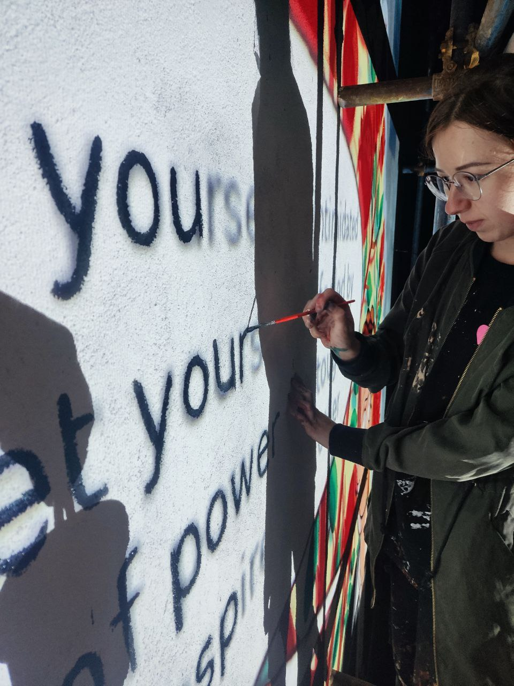
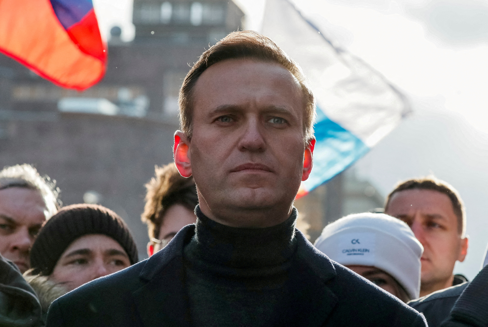

Այս մուրալը ստեղծվել է 2024 թվականին՝ տեղափոխված անձանց խմբի կողմից, ովքեր խորապես ազդված էին Ռուսաստանի Ֆեդերացիայում տեղի ունեցող իրադարձություններից: Նրանք որոշեցին հուշարձան թողնել Ալեքսեյ Նավալնիին մի խաղաղ փոքր լեռան քաղաքում, որը կոչվում է Դիլիջան: Դիլիջանը ապաստան է տվել մեծ թվով ինչպես քաղաքականապես տարբերակվող անձանց, այնպես էլ նրանց, ովքեր պարզապես վախենում էին իրենց և իրենց սիրելիների կյանքի համար: Հայաստանը, որպես հրաշալի հյուրասիրության երկիր, տրամադրել է այս մարդկանց ապաստան և պաշտպանության: Պորտրետը վերցված է Ալեքսեյի հիշատակին ստեղծված երաժշտական տեսահոլովակից, որը պատրաստվել է երաժիշտների և մշակութային գործիչների խմբի կողմից, ովքեր նույնպես ստիպված էին հեռանալ
By combining the memory of Navalny with the image of a pomegranate, we draw a parallel between the suffering of those innocently executed in Russian prisons and the suffering of those innocently killed in the Armenian genocide, erasing boundaries and showing that the impact of injustice by any authority has no temporal or territorial limits. Additionally, the pomegranate tree serves as a reminder of Sergei Parajanov's great work 'The Color of Pomegranates,' which tells the story of the great Armenian poet Sayat-Nova.

Artist – Vlada MV Picture(inst).
Vlada is a street artist from St. Petersburg who is currently a political refugee due to pressure from law enforcement agencies (the artist actively expressed her civic stance and made anti-war statements). She now lives in Armenia.
Quote: 'Navalny was not just an opposition politician; for most people who supported him, he was a symbol of honesty, civic solidarity, active civic engagement, unity, and hope for a better Russia in the future. People who sympathized with Navalny shared common values: sincerity, openness, and responsibility. At some point, I realized that my attitude towards this person became a measure of humanity. When I worked in a government agency, I saw with my own eyes how people cried at work over Navalny's death. Some even resigned. There are many people in Russia who sympathized with Navalny, both then and now. He became a reason for people to unite around the idea of a better future for their country. We all wanted the release of political prisoners, the eradication of corruption, transparent politics aimed at improving the quality of life for every person in Russia. This can only be desired by a true patriot. While Alexei was in prison, he turned to God, which made him even closer to the 'deep people.' In his last statement in court during another fabricated case, he said: 'The power is in the truth... Despite the fact that our country is built on injustice, and we constantly face injustice, the worst kind of injustice is armed injustice. Nevertheless, we see that at the same time, tens of millions of people want the truth, want to achieve the truth, and sooner or later they will get it. They will be satiated."
Navalny's story

Alexei Anatolyevich Navalny (June 4, 1976, Butyn, Moscow Oblast, USSR, RSFSR — February 16, 2024, Polar Wolf Correctional Colony, Kharp, Yamalo-Nenets Autonomous Okrug, Russia) was a Russian political and public figure, lawyer, and video blogger, and one of the most well-known opposition politicians in Russia.
Key Points of His Activities:
Founded the Anti-Corruption Foundation.
Participated in various political campaigns.
Was poisoned and imprisoned.
Death:
Alexei Navalny passed away on February 16, 2024, in the high-security correctional colony "Polar Wolf." According to the Federal Penitentiary Service's report, the official cause of death was a detached blood clot. However, many opposition figures and international organizations have expressed doubts about the official version and suggested that the death might have been violent. The exact circumstances of his death remain the subject of controversy and investigation.
Navalny's death triggered a wide international reaction and new waves of protests in Russia. The Russian authorities did not conduct an independent investigation into the cause of death. Navalny's family and associates have repeatedly called for an international investigation.
The Role of the Pomegranate in Armenian History
Why the Pomegranate?
Symbol of Life and Fertility: The pomegranate, filled with juicy seeds, is associated with life, birth, and the continuation of lineage. In Parajanov's films, it often becomes a metaphor for creativity, inspiration, and productivity.
Unity in Diversity: The numerous seeds inside the pomegranate symbolize unity in diversity, the harmony of opposites. This image reflects the paradoxical nature of the world and humanity, where light and darkness, life and death are intertwined.
Connection to Armenian Culture: The pomegranate is an important symbol in Armenian culture, associated with mythology, religion, and everyday life. For Parajanov, who was Armenian by origin, this fruit held special significance.
In Parajanov's Films
"Цвет граната":In this iconic film, the pomegranate becomes a central symbol, embodying the life and creativity of the Armenian poet Sayat-Nova. His blood is compared to pomegranate juice, and his poetry is likened to a ripening fruit.
The image of the pomegranate appears in other works by Parajanov as well, though to a lesser extent. It always carries a profound symbolic meaning related to themes of love, death, creativity, and national identity.
Significance for Parajanov's Work
Synthesis of Arts: Through the image of the pomegranate, Parajanov merged painting, poetry, music, and cinema. He created true works of art on screen, where each frame is a poem.
Search for National Identity: By referring to Armenian myths and symbols, Parajanov sought the roots of national culture and asserted the uniqueness of Armenian art.
Universality of the Symbol: Despite its deep connection to Armenian culture, the image of the pomegranate carries universal significance. It touches on eternal questions of existence, creativity, and the human soul.